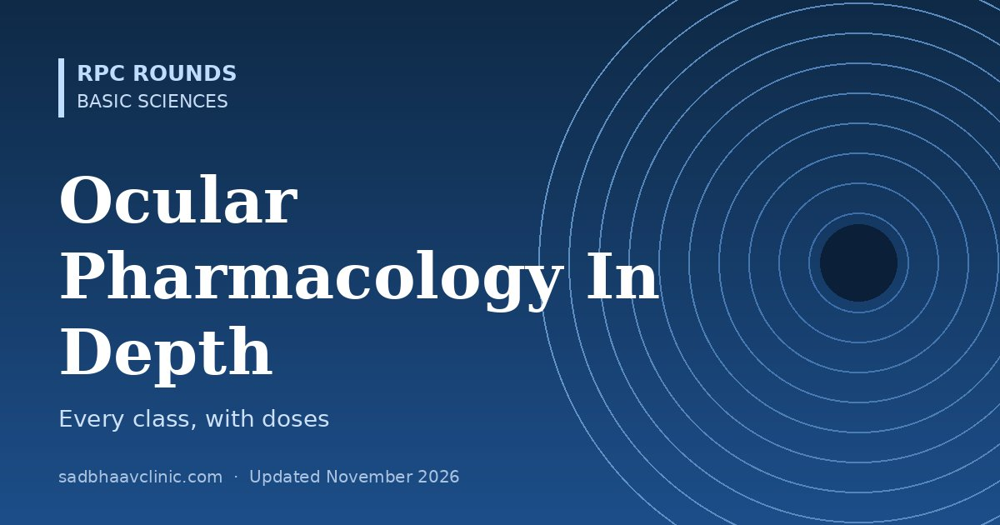

Last updated: November 2026
Almost every eye patient leaves with a prescription. This in-depth guide explains how drugs reach ocular tissues, then works through each drug class: how it acts, standard doses, side effects and the pitfalls examiners ask about.
| Route | Uses | Notes |
|---|---|---|
| Topical | Most anterior segment disease | Shake suspensions; 5 minutes between drops; ointment last |
| Subconjunctival and sub-Tenon | Steroids, antibiotics at the end of surgery; posterior sub-Tenon triamcinolone for CMO and uveitis | Depot effect; avoid in necrotising scleritis |
| Intracameral | Antibiotic prophylaxis (moxifloxacin, cefuroxime), mydriatics, anaesthetic | Use correct dilution: errors cause TASS or toxicity |
| Intravitreal | Anti-VEGF, steroids, antibiotics, antivirals, complement inhibitors | Bypasses barriers; endophthalmitis risk |
| Systemic | Uveitis, scleritis, GCA, orbital disease, infections | Must cross the blood-ocular barriers (lipophilic drugs better) |
| Implants and inserts | Dexamethasone and fluocinolone implants, bimatoprost and travoprost implants, punctal dexamethasone insert | Months of release |
| Class | Examples and dose | Action | Key side effects and cautions |
|---|---|---|---|
| Prostaglandin analogues | Latanoprost 0.005%, travoprost 0.004%, bimatoprost 0.01–0.03%, tafluprost 0.0015% once at night; latanoprostene bunod | Increase uveoscleral outflow (25–35% IOP fall) | Hyperaemia, lash growth, iris and periocular pigmentation, prostaglandin-associated periorbitopathy, CMO and uveitis flare in risk eyes |
| Beta-blockers | Timolol 0.25–0.5% once or twice daily; betaxolol 0.25–0.5% (beta-1 selective) | Reduce aqueous production | Bronchospasm, bradycardia, heart block, fatigue, depression, masking hypoglycaemia; avoid in asthma and COPD |
| Alpha-2 agonists | Brimonidine 0.1–0.2% two or three times daily; apraclonidine 0.5–1% (short-term, laser) | Reduce production, increase uveoscleral outflow | Follicular allergy, dry mouth, fatigue; contraindicated under 2 years (CNS depression, apnoea) |
| Carbonic anhydrase inhibitors | Dorzolamide 2% three times daily, brinzolamide 1%; acetazolamide 250 mg four times daily or 500 mg SR twice daily; methazolamide | Reduce production | Topical: stinging, bitter taste, corneal decompensation with poor endothelium. Oral: paraesthesia, malaise, kidney stones, hypokalaemia, metabolic acidosis, sulfa allergy, rare aplastic anaemia |
| Rho-kinase inhibitors | Netarsudil 0.02% at night | Increase trabecular outflow, lower episcleral venous pressure | Hyperaemia, conjunctival haemorrhages, cornea verticillata |
| Miotics | Pilocarpine 1–4% | Increase trabecular outflow (ciliary muscle contraction) | Brow ache, myopic shift, dim vision, retinal detachment risk; worsens uveitis |
| Hyperosmotics | Mannitol 20% IV 1–2 g/kg; oral glycerol 1–1.5 g/kg (avoid in diabetics) | Dehydrate the vitreous | Heart failure, urinary retention, confusion, kidney injury |
| Drug | Duration | Notes |
|---|---|---|
| Tropicamide 0.5–1% | 4–6 hours | Mainly mydriatic, weak cycloplegia; routine dilation |
| Cyclopentolate 0.5–1% | 12–24 hours | Cycloplegic refraction in children; CNS toxicity (hallucinations, ataxia) especially in young children |
| Homatropine 2% | 1–3 days | Uveitis |
| Atropine 0.5–1% | 7–14 days | Strongest cycloplegia; penalisation in amblyopia; systemic toxicity: "hot as a hare, red as a beet, dry as a bone, blind as a bat, mad as a hatter" |
| Phenylephrine 2.5% (10% cautiously) | 2–3 hours | Alpha-1 agonist mydriatic; raises BP: avoid 10% in cardiac disease, infants, MAOI or tricyclic users |
| Drug | Strength | Notes |
|---|---|---|
| Difluprednate 0.05% | Very potent | Emulsion; post-operative and uveitis; strong IOP effect |
| Prednisolone acetate 1% | Potent, good penetration (suspension: shake) | Uveitis and post-operative standard |
| Dexamethasone 0.1% | Potent | Solution or suspension; also in combination drops |
| Loteprednol 0.2–0.5% | Moderate, "soft" (inactivated in the cornea) | Lower IOP rise; allergy and post-operative use |
| Fluorometholone 0.1% | Mild | Lower IOP rise; surface inflammation |
| Group | Examples | Key points |
|---|---|---|
| Fluoroquinolones | Moxifloxacin 0.5%, gatifloxacin 0.3–0.5%, ofloxacin, ciprofloxacin (white crystalline precipitate) | Broad-spectrum; monotherapy for small bacterial ulcers; intracameral moxifloxacin prophylaxis |
| Aminoglycosides | Tobramycin 0.3% (fortified about 1.4%), gentamicin | Gram-negatives including Pseudomonas; epithelial toxicity |
| Cephalosporins | Fortified cefazolin 5%, ceftazidime 5% (fortified), cefuroxime (intracameral 1 mg) | Gram-positive (cefazolin), Gram-negative (ceftazidime) |
| Glycopeptides | Vancomycin 2.5–5% fortified; intravitreal 1 mg | MRSA, resistant Gram-positives |
| Macrolides | Azithromycin 1% drops; oral single dose for trachoma | Chlamydia, blepharitis |
| Tetracyclines | Doxycycline 50–100 mg, minocycline | Meibomian gland disease and rosacea (anti-inflammatory and anti-collagenase), corneal melting; avoid in pregnancy and young children |
| Antivirals | Aciclovir 3% ointment five times daily, ganciclovir 0.15% gel, trifluridine 1%; oral aciclovir 400 mg twice daily (HSV prophylaxis, HEDS), valaciclovir | Topical for epithelial disease; oral for prophylaxis, stromal and zoster disease |
| Antifungals | Natamycin 5% (polyene; filamentous fungi, first line per MUTT I), amphotericin B 0.15% (yeasts), voriconazole 1% topical, 200 mg oral twice daily | Natamycin penetrates poorly into deep stroma; voriconazole for deep or resistant disease |
| Anti-amoebic | PHMB 0.02%, chlorhexidine 0.02%, polihexanide 0.08%, propamidine 0.1% | Months of treatment |
| Drug | Usual intravitreal dose | Use |
|---|---|---|
| Bevacizumab | 1.25 mg in 0.05 mL | Neovascular AMD, DME, RVO, ROP (off-label) |
| Ranibizumab | 0.5 mg (0.3 mg for DME in the US; 0.1–0.2 mg in ROP) | AMD, DME, RVO, myopic CNV, ROP |
| Aflibercept | 2 mg in 0.05 mL; 8 mg high-dose for longer intervals | AMD, DME, RVO |
| Brolucizumab | 6 mg | AMD (watch for vasculitis) |
| Faricimab | 6 mg | AMD, DME (anti-VEGF plus anti-Ang-2) |
| Dexamethasone implant | 0.7 mg | DME, RVO oedema, uveitis |
| Triamcinolone (preservative-free) | 2–4 mg | CMO, uveitis; vitreous staining during surgery |
| Vancomycin / ceftazidime | 1 mg / 2.25 mg in 0.1 mL each | Bacterial endophthalmitis |
| Amphotericin B / voriconazole | 5–10 µg / 50–100 µg | Fungal endophthalmitis |
| Ganciclovir / foscarnet | 2–4 mg / 2.4 mg | CMV and herpetic retinitis |
| Clindamycin (with dexamethasone 0.4 mg) | 1 mg | Toxoplasmosis |
| Pegcetacoplan / avacincaptad pegol | 15 mg / 2 mg | Geographic atrophy |
Always check your unit protocol and product information; see also intravitreal injection protocol.
| Drug | Use |
|---|---|
| Low-dose atropine 0.01–0.05% | Myopia control in children |
| Pilocarpine 1.25%, aceclidine | Presbyopia (near vision for several hours) |
| Lotilaner 0.25% | Demodex blepharitis |
| Teprotumumab | Thyroid eye disease (anti-IGF-1R infusions) |
| Voretigene neparvovec | Gene therapy for RPE65 retinal dystrophy |
| Netarsudil-latanoprost combination | Glaucoma |
| Sustained-release implants (bimatoprost, travoprost) | Glaucoma without daily drops |
Where residents slip
Related: Ocular Pharmacology: High-Yield Guide for Residents, Glaucoma Medications Chart: Classes, IOP Lowering, Side Effects, Ocular Side Effects of Systemic Drugs (ADRs): Modern and Classic, Revise ophthalmology checklist.
📘 Want more exam-ready material? See Most Commons in Ophthalmology on Kindle, or browse all my books.
Looking for an eye specialist in Ahmedabad? Learn about our Eye Department or book a consultation with Dr. Dhaval Patel.